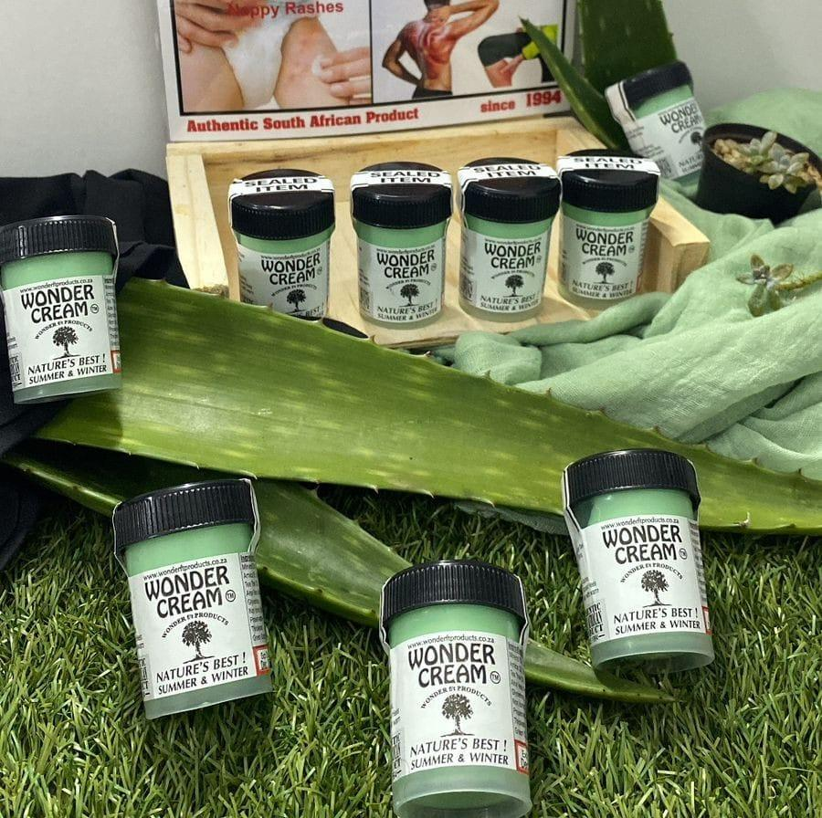
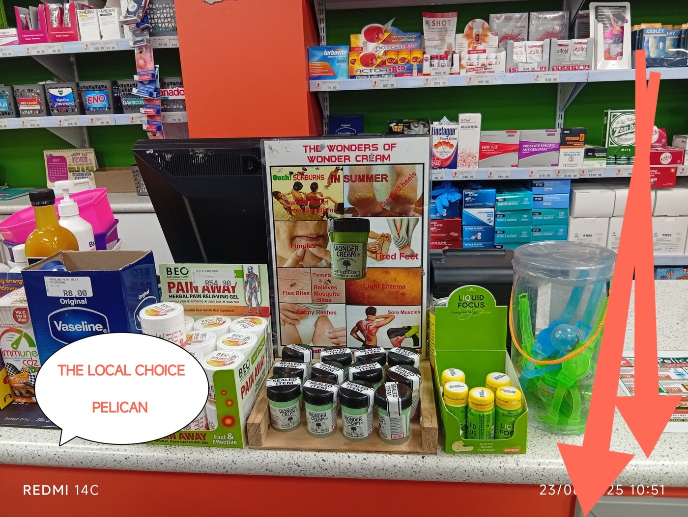
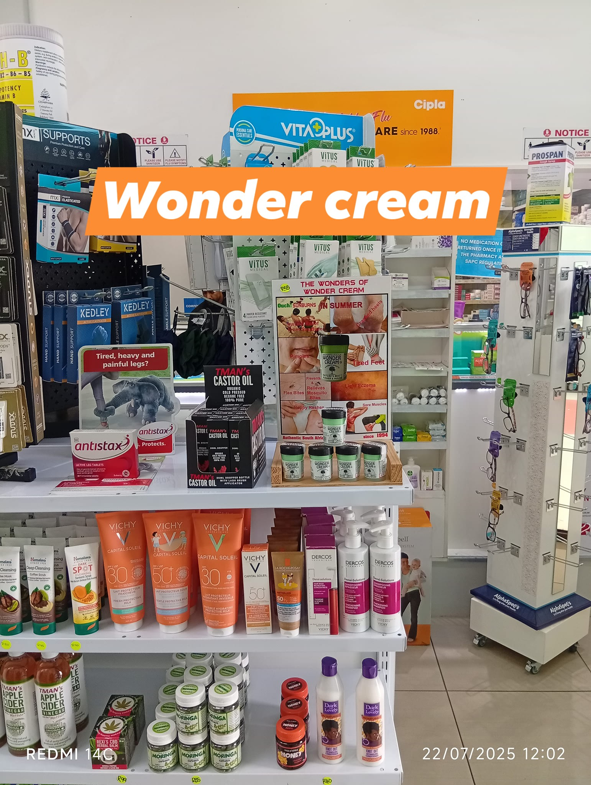
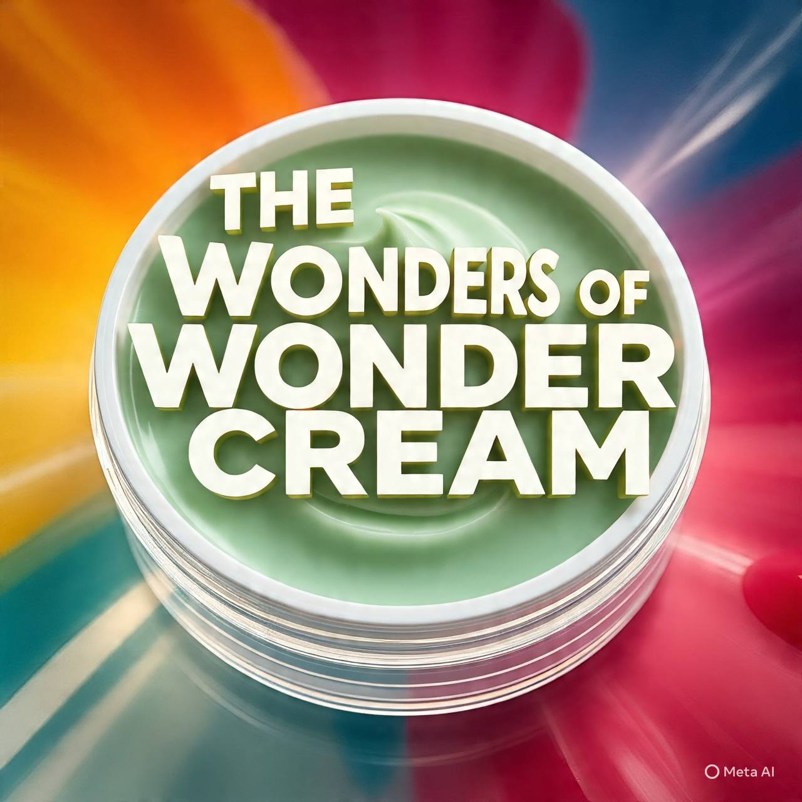
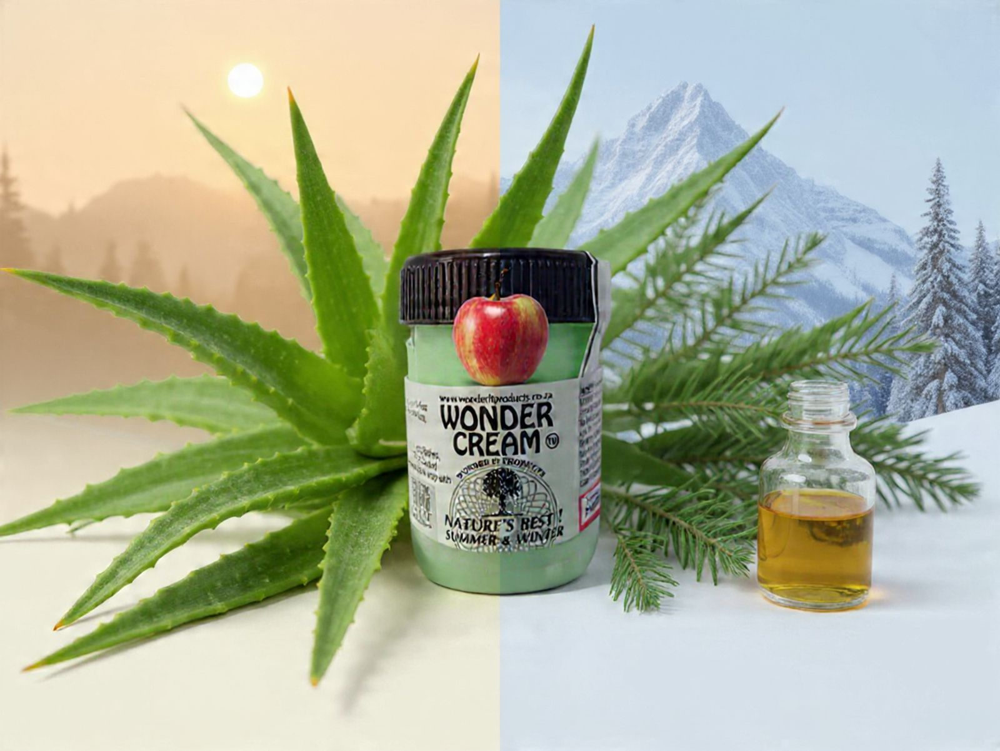
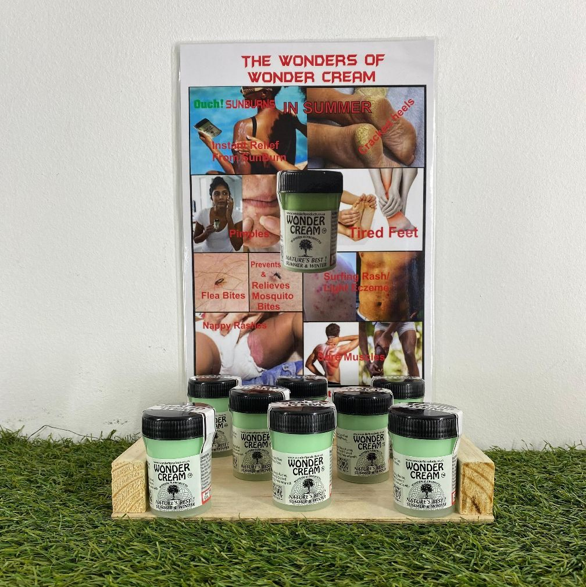
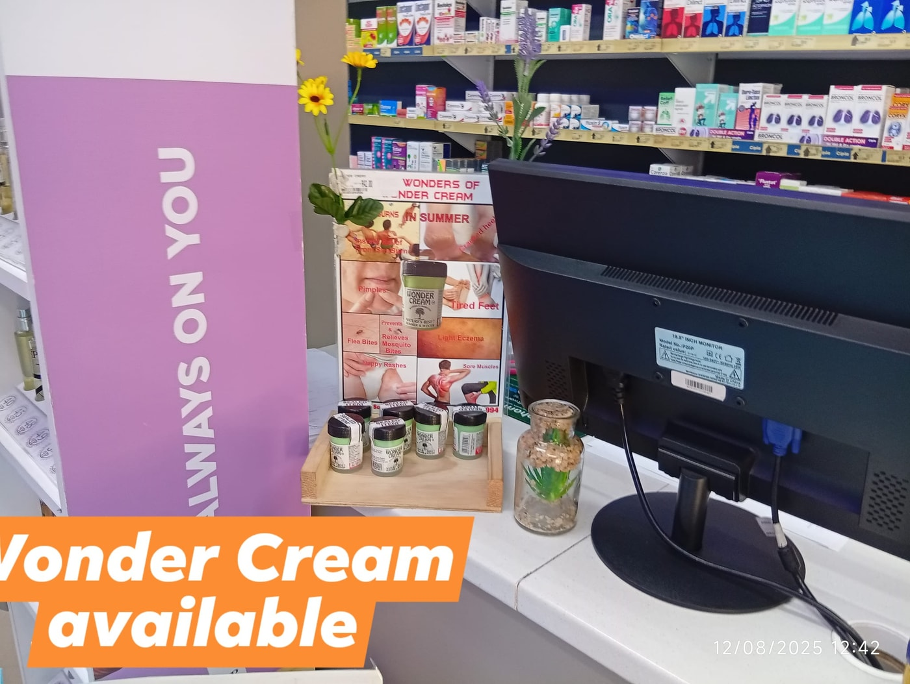
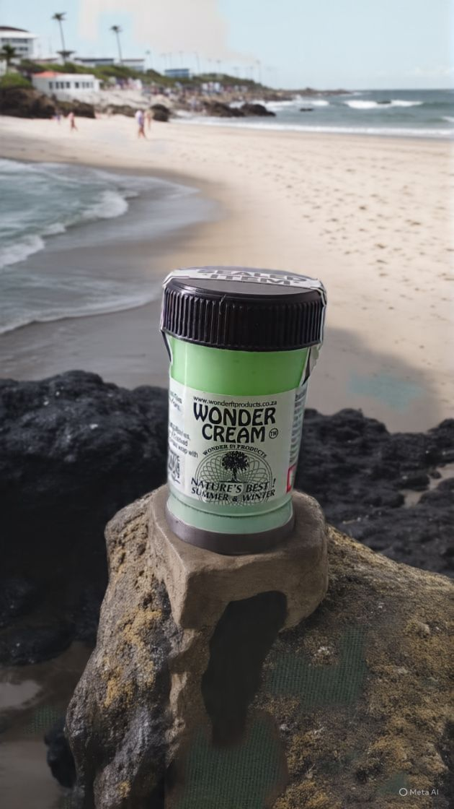

Proudly South African · Since 1994
A jar of relief for
every season.
Wonder Cream is a soothing blend of natural oils, crafted in the Western Cape and trusted by families for over 30 years — for sunburn, dry skin, minor cuts, pimples, cracked heels, bites and everyday irritations.

Our Story
Nature's best, in one convenient jar.
Wonder Cream has been crafted in the Western Cape since 1994 — a carefully made blend of natural oils designed to work in every season, from harsh summer sun to dry winter air.
What started as a trusted household remedy has grown into a product stocked at pharmacies and beauty stores across KwaZulu-Natal and beyond, recommended pharmacy to pharmacy and shared community group to community group. It's gentle enough for the whole family and versatile enough to keep in every kitchen, bathroom and beach bag.
— Yusuf Agjee, Wonder Cream
What It's For
One jar. Every season. So many uses.
Wonder Cream is a multi-purpose natural balm — the kind of thing families keep within reach all year round.
Sunburn Relief
Instant soothing relief after too much time in the sun.
Cracked Heels & Tired Feet
Softens rough, dry heels after a long day on your feet.
Minor Cuts & Grass Burns
For everyday nicks, scrapes and sports-field mishaps.
Flea & Mosquito Bites
Helps prevent and relieve the itch of insect bites.
Pimples & Light Eczema
A gentle touch for blemishes and mild skin irritation.
Nappy Rashes
A soothing option for delicate, sensitive baby skin.
Sore Muscles & Neck Pain
Rub in after exercise or a stiff night's sleep.
Itchy Scalp & Headaches
A dab at the temples or scalp for gentle relief.
Wonder Cream is a traditional skincare balm intended for minor, everyday skin comfort. It is not a medical treatment — for persistent or serious conditions, please consult your pharmacist or doctor.
Where to Find Us
On the shelf at pharmacies across KZN.
Wonder Cream is stocked at well over 150 independent pharmacies and Cosmix Beauty Stores, from the North Coast to the South Coast and inland to the Midlands.
Durban North & Umhlanga
Durban North Pharmacy, Umhlanga MediSport, Village Health Pharmacy, The Square Ridge Pharmacy, Zeni Pharmacy, TLC Hilltop & Cornubia, Umdloti Medi Pharmacy and more.
Westville, Pinetown & Kloof
Pharmaclin Group (Kloof, Gillitts, Wyebank, Buckingham Terrace), Field Centre Pharmacy, People's Pharmacy, Blair Atholl, Shepmed Pharmacy and more.
Chatsworth, Phoenix & Central Durban
The Local Choice (Pelican, Springfield), Pharmaclin Chatsworth, Maharaj's Shallcross, Nightingale Pharmacy, China Mall Pharmacy, Overport, Windermere and more.
North & South Coast
Tongaat, KwaDukuza, Stanger, Amanzimtoti and Doonside pharmacies including Pharmaclin and Linmed Pharmacy.
Pietermaritzburg & Midlands
Mooi River Pharmacy, Dusi Med, Royal Hospital Pharmacy, Delta Pharmacy, Northdale Pharmacy and selected pharmacies in Newcastle.
Cosmix Beauty Stores
Available nationally at Cosmix Beauty branches, including Kokstad, Izingolweni, Mbizana, Port Shepstone, Hammarsdale and more.
Can't find it nearby? Message us on WhatsApp for your closest stockist — new pharmacies are added regularly.


Gallery
Wonder Cream, out and about.





Get In Touch
Questions, orders or stockist requests — reach out anytime.
We're happiest hearing from pharmacies, stores and customers across KwaZulu-Natal. Call, WhatsApp or email us directly.
- Call / WhatsApp 084 548 1543
- Email yusufagjee1@gmail.com
- Facebook Wonder Cream on Facebook
- Category Health & Beauty
Prefer WhatsApp?
Tap below to message us directly — great for stockist locations, bulk orders for your pharmacy, or general questions.
Chat on WhatsApp Send an Email